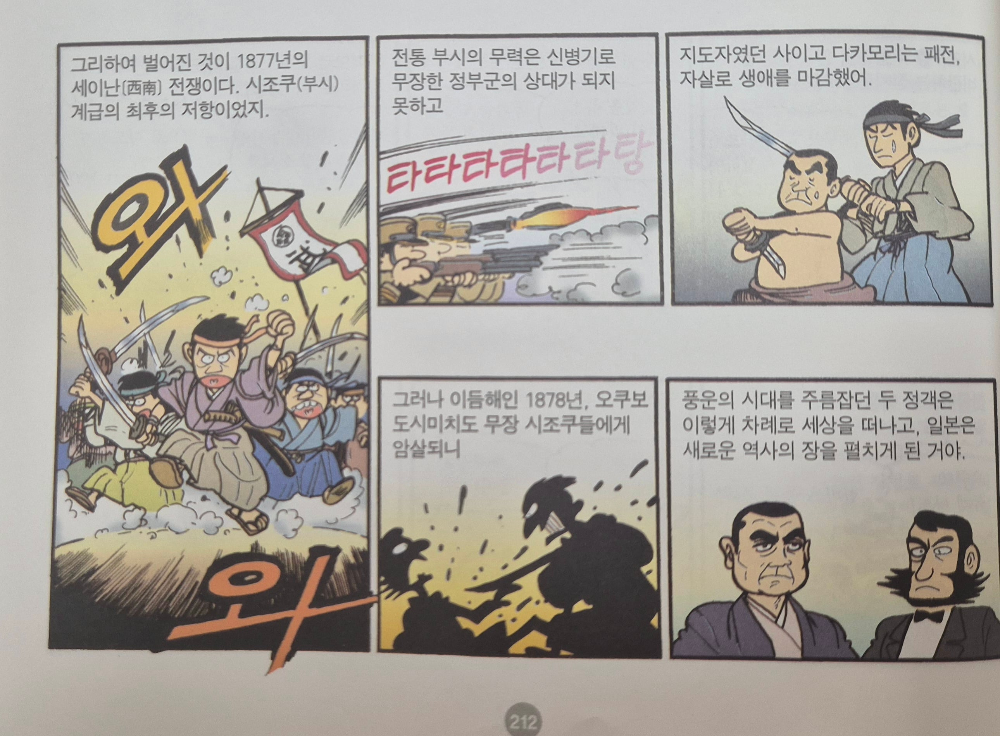
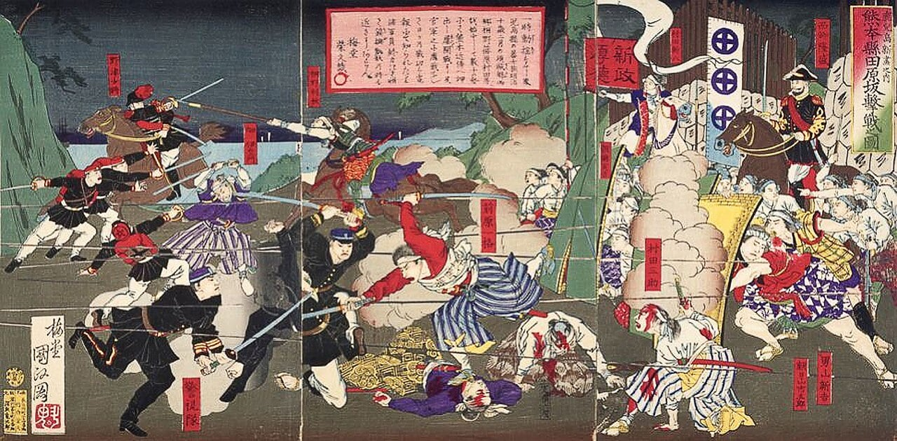

......?

정보) 실제 역사에서는 오히려 정부군이 발도돌격에 탈탈 털렸으며
결국 정부군이 경시청에 발도대를 창설해 간신히 이겼다.

......?

정보) 실제 역사에서는 오히려 정부군이 발도돌격에 탈탈 털렸으며
결국 정부군이 경시청에 발도대를 창설해 간신히 이겼다.
발도대라는 군가가 있는데
시조쿠들한테 얼마나 털렸으면
가사에도 사이고 다카모리 이새끼 존나 세다고 추켜세워줌
히무라 켄신 역시 미친놈이었어
지금 당장 신선조에 가입
신선조 죽이고 다니던 놈인데 왜 신선조에 들어가
? 총들고 칼에 져? 칼뽕 이유 있었네 ㄷㄷ
용과같이 유신 했는데 꽤 역사느낌나게 잘만들었더라
이거 재미없다는새끼들 이상했음
과거 쇼군토탈워에서 몰락DLC로 이배경했을땐 몰랐는데
양이지사위주의 지방 번 세력들 vs 북부랑 교토?의 신선조 세력들 싸우는 역사가 재밌었음
같은배경인 은혼도 생각나서 더재밌었음
그래서 켄신한테 정부쪽에붙어서 도와달라한거구나!
팩트)켄신 전처 죽여버리고 더 어린 아내 얻음
게다가 새거
전처의 약혼자를 죽여버리고 자기가 결혼한 다음 칼받이로 소모해서 죽이고 더 어리고 개인 검술도장 물려받은 아가씨랑 재혼
리버스퐁퐁


어케이겼어
발도제 이 미친색끼